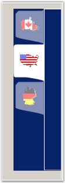

The simplest way to customize TabDrawing is to handle the DrawItem event. A departure from the normal is the TabControlAdv's ability to let you selectively draw portions of the tab. For this purpose, TabDrawing is classified into three portions: Background, Border and Interior (text and image). The event args lets you delegate drawing of one or more portions of the tab to the default drawing code while custom drawing the other portions of the tab.
 Note: The following code provides a sample
discussion of the Custom TabControls.
Note: The following code provides a sample
discussion of the Custom TabControls.
· The following code sample demonstrates how to create Yahoo Messenger-like tabs.
|
[C#]
private void Tab_DrawItemYahooMessengerLike(object sender, DrawTabEventArgs drawItemInfo) { // This will work only when the TabStyle is set to 3D (typeof(TabRenderer3D)). // Draw the default background and interior in all cases by delegating the drawing to the default drawing code. drawItemInfo.DrawBackground(); drawItemInfo.DrawInterior();
// The border should be drawn only when the item is selected or highlighted. if(((int)drawItemInfo.State & ((int)DrawItemState.Selected | (int)DrawItemState.HotLight)) > 0) { // Draw the borders. drawItemInfo.DrawBorders(); } } |
|
[VB.NET]
Private Sub Tab_DrawItemYahooMessengerLike(ByVal sender As Object, ByVal drawItemInfo As DrawTabEventArgs) ' This will work only when the TabStyle is set to 3D (typeof(TabRenderer3D)). ' Draw the default background and interior in all cases by delegating the drawing to the default drawing code. drawItemInfo.DrawBackground() drawItemInfo.DrawInterior() ' The border should be drawn only when the item is selected or highlighted. If (CInt(drawItemInfo.State) And (CInt(DrawItemState.Selected) Or CInt(DrawItemState.HotLight))) > 0 Then ' Draw the borders. drawItemInfo.DrawBorders() End If End Sub |
· The following code sample demonstrates how to create MSN Messenger-like tabs.
|
[C#]
private void Tab_DrawItemMSNMessengerLike(object sender, DrawTabEventArgs drawItemInfo) { Rectangle rectTab = drawItemInfo.Bounds; Graphics g = drawItemInfo.Graphics; g.SmoothingMode = SmoothingMode.AntiAlias;
// Create a path for the border. GraphicsPath gp = new GraphicsPath(); gp.AddBezier(rectTab.Right - 1, rectTab.Bottom + 6, rectTab.Right-1, rectTab.Bottom + 2,rectTab.Left, rectTab.Bottom-3,rectTab.Left, rectTab.Bottom-7); gp.AddLine(rectTab.Left, rectTab.Bottom-4, rectTab.Left, rectTab.Top + 5); Point[] curvePoints1 = {new Point(rectTab.Left, rectTab.Top + 5), new Point(rectTab.Left+2, rectTab.Top+2), new Point(rectTab.Left+3, rectTab.Top+1), new Point(rectTab.Left+5, rectTab.Top)}; gp.AddCurve(curvePoints1); gp.AddBezier(curvePoints1[0], curvePoints1[1], curvePoints1[2], curvePoints1[3]); gp.AddLine(curvePoints1[3], new Point(rectTab.Right-6, rectTab.Top)); Point[] curvePoints2 = {new Point(rectTab.Right-6, rectTab.Top), new Point(rectTab.Right-2, rectTab.Top-1), new Point(rectTab.Right-2, rectTab.Top-3), new Point(rectTab.Right-1, rectTab.Top - 5)}; gp.AddCurve(curvePoints2);
if(((int)drawItemInfo.State & (int)DrawItemState.Selected) > 0) { g.FillPath(new SolidBrush(drawItemInfo.BackColor), gp); drawItemInfo.DrawInterior(); } else { // Draw the text and image first. drawItemInfo.DrawInterior(); // Then alpha-blend active tab color over it. g.FillPath(new SolidBrush(Color.FromArgb(128, this.tabControlExt1.ActiveTabColor)),gp); } } |
|
[VB.NET]
Private Sub Tab_DrawItemMSNMessengerLike(ByVal sender As Object, ByVal drawItemInfo As DrawTabEventArgs) Dim rectTab As Rectangle = drawItemInfo.Bounds Dim g As Graphics = drawItemInfo.Graphics g.SmoothingMode = SmoothingMode.AntiAlias ' Create a path for the border. Dim gp As New GraphicsPath()
gp.AddBezier(rectTab.Right - 1, rectTab.Bottom + 6, rectTab.Right - 1, rectTab.Bottom + 2, rectTab.Left, rectTab.Bottom - 3, rectTab.Left, rectTab.Bottom - 7) gp.AddLine(rectTab.Left, rectTab.Bottom - 4, rectTab.Left, rectTab.Top + 5) Dim curvePoints1 As Point() = {New Point(rectTab.Left, rectTab.Top + 5), New Point(rectTab.Left + 2, rectTab.Top + 2), New Point(rectTab.Left + 3, rectTab.Top + 1), New Point(rectTab.Left + 5, rectTab.Top)} gp.AddCurve(curvePoints1) gp.AddBezier(curvePoints1(0), curvePoints1(1), curvePoints1(2), curvePoints1(3)) gp.AddLine(curvePoints1(3), New Point(rectTab.Right - 6, rectTab.Top)) Dim curvePoints2 As Point() = {New Point(rectTab.Right - 6, rectTab.Top), New Point(rectTab.Right - 2, rectTab.Top - 1), New Point(rectTab.Right - 2, rectTab.Top - 3), New Point(rectTab.Right - 1, rectTab.Top - 5)} gp.AddCurve(curvePoints2)
If (CInt(drawItemInfo.State) And CInt(DrawItemState.Selected)) > 0 Then g.FillPath(New SolidBrush(drawItemInfo.BackColor), gp) drawItemInfo.DrawInterior() Else ' Draw the text and image first. drawItemInfo.DrawInterior() ' Then alpha-blend active tab color over it. g.FillPath(New SolidBrush(Color.FromArgb(128, Me.tabControlExt1.ActiveTabColor)), gp) End If End Sub |

Figure 1080: MSN Messenger-like Tabs
See Also
How to Display TabStrip when there are no TabPages?